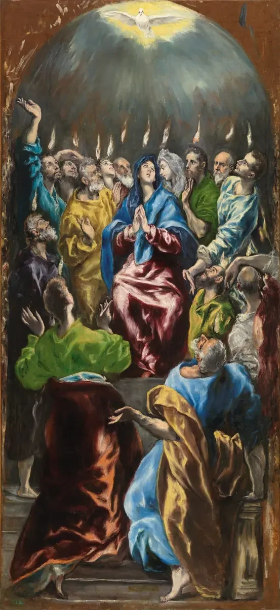
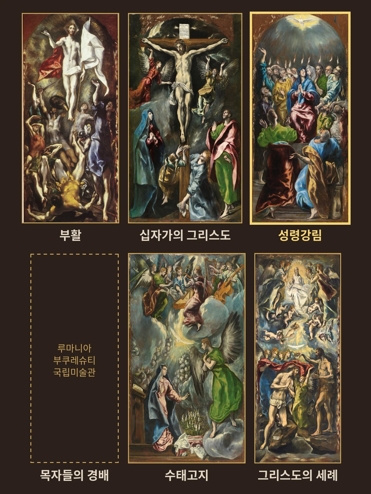
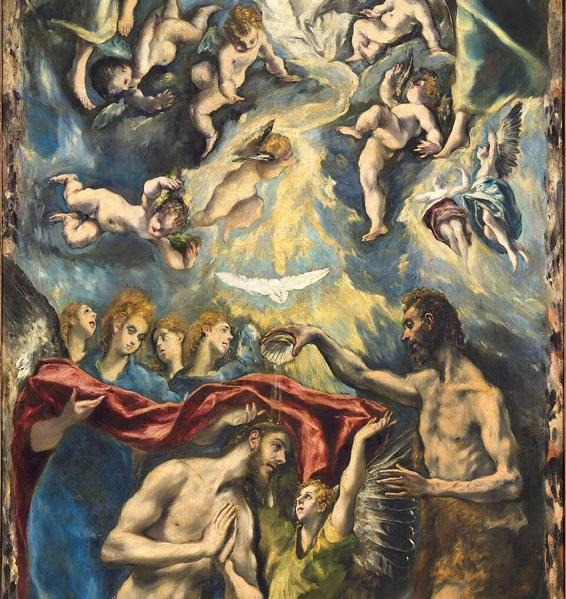
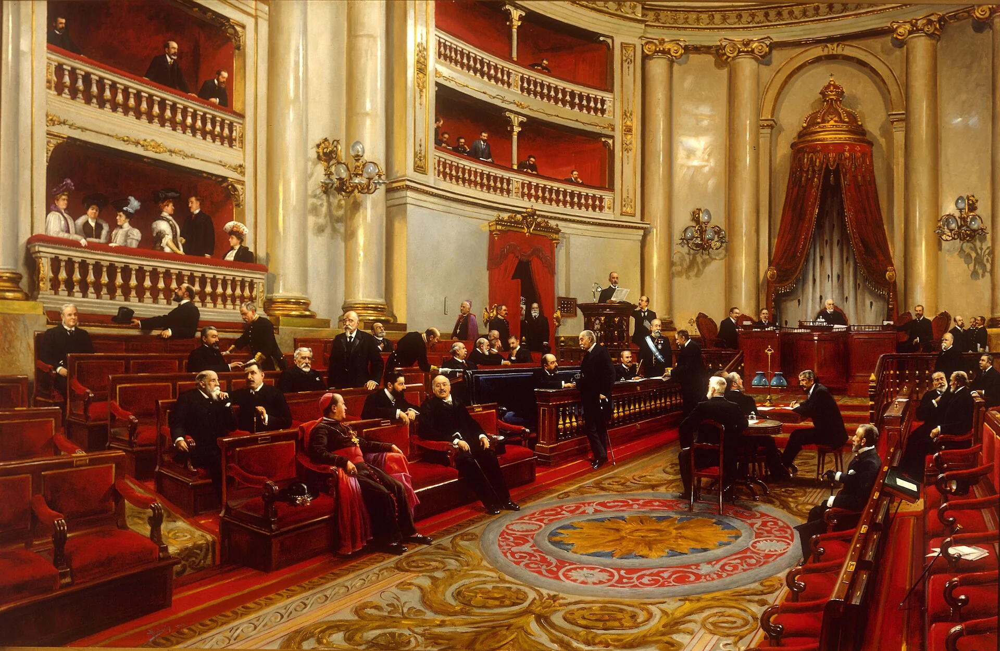

아직 펼치지 않은 카드빛과 어둠 사이의 얼굴 · 7엘 그레코 「성령강림」예수가 떠난 뒤 모여 기도하던 사람들의 머리 위에 불꽃이 내려앉았어요. 화가는 그 순간을 어떻게 그렸을까요?기도하던 사람들 머리 위에 작은 불꽃이 내려왔대!
1596~1600년 무렵스페인 마드리드 도냐 마리아 데 아라곤 학교 성당 · 지금은 마드리드 프라도 미술관
엘 그레코 「성령강림」
1600년 여름, 톨레도에서 온 수레가 마드리드의 한 학교 성당으로 큰 그림들을 실어 왔어요. 그 제단화의 위층 오른쪽에 걸렸던 것으로 보이는 그림이 엘 그레코(El Greco)의 「성령강림」이에요. 기도하던 사람들 머리 위의 불꽃과 빛나는 비둘기, 그리고 우리를 바라보는 한 사람을 찾아보세요.
아주 옛날 스페인의 화가 엘 그레코 아저씨가 그린 그림이야. 기도하던 사람들 머리 위에 작은 불꽃이 내려왔대. 하얀 비둘기랑, 우리를 쳐다보는 할아버지도 찾아볼까?
검수 전 시안이에요(기준서 1판). 성경은 풀어 쓰고 개역개정 링크를 달았어요. 그림 속 사람이 누구인지는 해설이 그렇게 본다고 밝혔어요. 상상은 ‘눈 감고 상상해 보기’에만 썼어요.
시안 확인용카드 단계 미리 보기
1
수레에 실려 온 제단화
마드리드의 ‘강생의 성모 학교’는 세운 사람의 이름을 따서 ‘도냐 마리아 데 아라곤 학교’라고 불렸어요. 강생은 하느님이 사람이 되었다는 뜻이에요. 이곳은 아우구스티노회 수도자들의 학교 겸 수도원이었어요(티센 미술관, 스페인 상원 안내 책자).
마드리드시의 문화유산 자료는 도냐 마리아 데 코르도바 이 아라곤(doña María de Córdoba y Aragón)이 1581년에 이 학교를 세웠다고 적어요.
학교 성당은 1599년에 봉헌되었어요. 1600년 7월, 톨레도에 있던 엘 그레코의 작업실에서 마드리드까지 그림을 실어 나를 수레꾼과 맞춰 세울 사람을 불렀어요. 그때 제단화가 다 되었던 거예요(티센 미술관).

티센 미술관의 설명에 따르면, 제단화는 두 층이었던 것 같아요. 아래층 가운데에 「수태고지」, 그 왼쪽에 「목자들의 경배」, 오른쪽에 「그리스도의 세례」가 있었어요. 위층 가운데에는 「십자가의 그리스도」, 왼쪽에 「부활」, 오른쪽에 「성령강림」이 있었어요.
엘 그레코는 1541년 그리스의 크레타섬에서 태어나 베네치아와 로마의 화가들에게 배웠어요. 서른네 살에 스페인으로 와 마드리드와 주로 톨레도에서 일했고, 1614년 톨레도에서 세상을 떠났어요(프라도 미술관).
엘 그레코 아저씨가 큰 그림 여러 장을 그려서, 수레에 싣고 마드리드의 성당으로 보냈대.
물어보기성령강림 그림은 제단화의 어디쯤에 걸렸을까?
2
세 번 내려오는 비둘기
그리스도인들은 성령을 흔히 비둘기로 그려 왔어요. 리터지컬 이어 인 아트의 해설은 이 모습이, 예수가 세례를 받을 때 성령이 비둘기 같은 모습으로 내려왔다는 이야기(누가복음 3장 22절)에서 왔다고 설명해요.
프라도에 있는 이 제단화 그림 가운데 세 점에 빛나는 비둘기가 나와요. 「수태고지」에서는 천사와 마리아 사이에, 「그리스도의 세례」에서는 세례를 받는 예수의 머리 위에, 「성령강림」에서는 맨 꼭대기에 있어요.


「수태고지」는 천사 가브리엘이 마리아에게, 성령이 마리아에게 내려와 아기를 갖게 될 거라고 알린 장면이에요(누가복음 1장 35절). 「그리스도의 세례」에서는 세례자 요한이 조개껍데기로 예수의 머리에 물을 부어요.
하얀 비둘기는 성령을 뜻해. 두 그림에서도 비둘기를 찾아볼까?
물어보기비둘기는 그림 어디에 숨어 있었어?
3
머리 위의 불꽃
사도행전은 예수가 하늘로 올라간 뒤, 예수의 어머니 마리아가 사도들과 함께 마음을 모아 기도했다고 전해요(사도행전 1장 14절).
그리고 오순절에 모두 한곳에 모여 있을 때, 거센 바람 같은 소리가 집을 채우고 불처럼 갈라진 혀 같은 것이 한 사람 위에 하나씩 내려앉았다고 전해요(사도행전 2장 1~4절).
기도하던 사람들 사이에 섰어요. 그림 속 여섯 곳을 하나씩 눌러 찾고, 작은 것은 ‘가까이 보기’로 들여다보세요.
엘 그레코, 「성령강림」, 1596~1600년 무렵, 캔버스에 유채 · 마드리드 프라도 미술관 · 그림: 엘 그레코 · 퍼블릭 도메인 · 위키미디어 공용
그림 위의 숫자나 아래 번호를 눌러 보세요.
다 찾았어요. 위에서 내려온 빛이 작은 불꽃이 되어, 한 사람 한 사람 위에 머물러요.
리터지컬 이어 인 아트의 해설은 길게 늘인 몸과 그 위의 불꽃이 마치 타오르는 횃불처럼 위로 솟는 것 같다고 설명해요.
위 단추의 노래는 성령강림 미사에서 부르는 「Veni, Sancte Spiritus」예요. 첫 절은 “오소서, 성령이여, 하늘에서 당신 빛의 빛살을 보내 주소서”라고 노래해요(라틴어에서 이 안내서가 옮김).
1912년 가톨릭 백과사전은 이 노래가 세 줄씩 열 절로 되어 있고, 중세의 글쓴이들이 ‘황금 부속가’라고 불렀다고 적어요. 부속가는 9세기 무렵부터 미사에서 복음을 읽기 전, 알렐루야 노래에 이어 부르려고 지은 노래예요. 트리엔트 공의회(16세기 가톨릭 교회의 큰 회의) 뒤에 남은 부속가는 넷뿐이었는데, 이 노래가 그 하나예요(디트로이트 대교구 신문, 2022).
사람들 머리 위에 작은 불꽃이 하나씩 내려왔어. 하나씩 눌러 찾아볼까? “오소서, 성령이여” 노래도 들어 보자.
물어보기그림 밖의 우리를 쳐다보는 사람은 어디 있었어?
4
제단화가 떠난 성당
미술사가 앤드루 그레이엄딕슨에 따르면, 제단화는 1810년 프랑스 점령기에 해체되었어요. 그보다 앞서 1809년, 조제프 보나파르트(José Bonaparte) 정부가 수도원 재산을 거두어들이면서 수도자들은 쫓겨났어요(스페인 상원 안내 책자).
1813년, 카디스에 모였던 의회(코르테스)가 마드리드로 옮겨 오면서 이 옛 성당을 회의장으로 골랐어요. 회의장은 1814년 5월 2일에 문을 열었어요(상원 안내 책자).


1820년 건축가 이시드로 곤살레스 벨라스케스가 옛 성당을 신고전주의 회의장으로 바꾸었어요. 1837년부터 이 건물은 스페인 상원이 되었어요(상원 안내 책자, 마드리드시 문화유산 자료).
그림들이 걸려 있던 성당은 지금 스페인 상원 건물이 되었어. 나라의 일을 의논하는 곳이야.
물어보기옛날 성당은 지금 무엇으로 쓰일까?
눈 감고 상상해 보기
모두 한방에 모여 기도하고 있어요. 갑자기 거센 바람 같은 소리가 방을 가득 채워요. 고개를 들자 머리 위마다 작은 불꽃이 하나씩 내려앉아요. 옆 사람의 얼굴이 불빛에 환해지고, 누군가는 두 팔을 번쩍 들어요.
눈을 감아 봐. 사람들이 모여 기도하고 있어. 휘익, 바람 소리가 나더니 머리 위에 작은 불꽃이 하나씩 내려왔어!
나의 자리
다시 보면, 사람들 머리 위에 작은 불꽃이 앉아 있고, 한 사람만 그림 밖의 우리를 봐요.
내 마음에 불이 붙었던 순간이 있었나요? 무엇이 나를 움직였나요?
기도할 때 내 마음은 어떤 모양일까?
마음에 닿는 한 줄을 고르거나 직접 써 보세요. 한 줄을 남기면 이 자리의 도장이 찍혀요. 이 기기에만 저장돼요.
더 깊이
궁금한 칸만 펼쳐 읽어도 괜찮아요.
알고 보면
작게 그린 판들 이 제단화의 그림들은 작게 다시 그린 판이 여러 점 남아 있어요. 「수태고지」는 마드리드 티센 미술관과 빌바오 미술관에, 「목자들의 경배」와 「그리스도의 세례」는 로마 국립 고전 미술관에, 「부활」은 미국 세인트루이스 미술관에 있고, 「성령강림」은 개인이 가지고 있어요(티센 미술관).
엘 그레코의 길 프라도 미술관은 엘 그레코가 스물다섯 살 무렵 이탈리아로 건너가 배웠고, 서른네 살에 스페인에 와서 엘 에스코리알 수도원의 일을 맡았다고 소개해요.
회의장이 된 성당 상원 안내 책자에 따르면 옛 회의장에는 1814년 5월 2일에 문을 연 일을 적은 판이 붙어 있어요. 1820년 공사 때 옛 성가대석은 방청석이 되었어요.
옛 회의장의 지금 지금은 ‘옛 회의장(Antiguo Salón de Sesiones)’이라고 불러요. 상원은 이 방에서 지금도 새 상원의 첫 회의나 외국 정상을 맞는 행사 같은 큰 행사를 열어요(상원 안내 책자).
기록마다 다른 점
제단화는 몇 점이었나 프라도 미술관의 쉬운 안내는 엘 그레코가 「수태고지」와 다른 여섯 점, 모두 일곱 점을 그렸고 그 가운데 네 점이 프라도에 있다고 적어요. 티센 미술관의 설명은 여섯 점의 자리를 적고, 그 가운데 다섯 점이 프라도에 있다고 해요.
「성령강림」도 그 하나일까 미술사가 그레이엄딕슨은 엘 그레코 연구자 대부분이 이 그림을 여러 폭 제단화의 하나로 본다고 적어요. 이 카드 책 앞면도 ‘윗부분이었던 것으로 보여요’라고 적었어요.
자화상일까 리터지컬 이어 인 아트의 해설은 그림 밖을 보는 사람이 엘 그레코의 자화상일 것(probably)이라고 해요. 확정된 이야기는 아니에요.
노래는 누가 지었나 1912년 가톨릭 백과사전은 여러 기록을 소개해요. 1220년 무렵의 한 기록은 교황 인노첸시오 3세가 지었다고 하고, 1210년 무렵의 한 글쓴이(피트라 추기경은 영국 시토회 수도자로 봐요)는 캔터베리 대주교 스티븐 랭턴이 지었다고 해요. 백과사전은 인노첸시오 3세 쪽을 더 그럴듯하다고 적고, 디트로이트 대교구 신문(2022)은 랭턴 쪽이 더 그럴듯하다고 봐요.
직접 가 보기
확인한 날 · 2026년 11월 18일 · 바뀌기 쉬운 정보라 정기적으로 다시 확인해요
「성령강림」은 마드리드 프라도 미술관(파세오 델 프라도)에 있어요. 마드리드시 관광 안내에 따르면 미술관은 월요일부터 토요일까지 10시부터 20시까지, 일요일과 공휴일은 10시부터 19시까지 열어요.
월요일부터 토요일까지는 문 닫기 전 두 시간, 일요일에는 마지막 시간대에 무료로 들어갈 수 있어요. 가까운 지하철역은 2호선 방코 데 에스파냐예요. 가기 전에 미술관 누리집에서 다시 확인하세요.
스페인 상원 건물은 해마다 여는 ‘문 여는 날(Jornadas de Puertas Abiertas)’에 시민을 맞아요(상원 안내 책자). 그 밖의 방문 방법은 상원 누리집에서 확인하세요.
불꽃 아래 여섯 곳 금박
그림 속 여섯 곳을 모두 찾아 읽으면 카드에 금박이 입혀져요.
그림 속 여섯 곳을 모두 찾아 읽기
오소서, 성령이여 채색
성령강림 미사에서 부르는 노래 「오소서, 성령이여」를 들어 보거나, 아이와 함께 ‘영화처럼 보기’를 끝까지 보면 카드가 채색돼요. 둘 가운데 하나만 해도 돼요.
‘머리 위의 불꽃’에서 「오소서, 성령이여」 듣기
아이와 함께 ‘영화처럼 보기’를 끝까지 보기
근거 보기 (12)
- 티센 미술관(마르 보로비아): 엘 그레코 「수태고지」(작은 판) 설명 — 강생의 성모 학교(세운 사람의 이름으로 불림, 아우구스티노회), 1599 성당 봉헌, 1600년 7월 수레꾼과 조립하는 사람(톨레도 작업실→마드리드), 두 층 배치(그런 것 같다), 부쿠레슈티의 「목자들의 경배」, 작게 그린 판들(빌바오·로마·세인트루이스·개인 소장)
- 티센 미술관 영어 설명: Colegio de Nuestra Señora de la Encarnación, 1599 봉헌, 1600년 7월
- 프라도 미술관 쉬운 안내(엘 그레코 작품 둘러보기): 1541 크레타, 25세 이탈리아(베네치아·로마), 34세 스페인·엘 에스코리알, 마드리드·톨레도, 1614 톨레도, 도냐 마리아 데 아라곤 학교 제단화 일곱 점·프라도에 넷
- 스페인 상원 안내 책자 「Descubre el Senado」: 학교 겸 수도원(프란시스코 데 모라 설계), 아우구스티노회, 1809 추방(조제프 보나파르트의 재산 몰수), 1813 옛 성당을 회의장으로, 1814.5.2 개회와 그 판, 1820 이시드로 곤살레스 벨라스케스, 옛 성가대석은 방청석, 지금의 쓰임, 1835 프로세레스, 1837 상원, 문 여는 날
- 마드리드시 문화유산 자료(상원 궁): 1581 도냐 마리아 데 코르도바 이 아라곤 설립, 프란시스코 데 모라, 1813 안토니오 프라트, 1820 곤살레스 벨라스케스, 1837 상원
- 리터지컬 이어 인 아트(아멜리아 매키, 2025): 비둘기에서 내려오는 빛, 세례에서 온 비둘기, 불꽃과 늘인 몸(횃불처럼), 가운데 마리아의 고요한 기도, 막달라 마리아, 베드로와 요한, 자화상일 것, 큰 제단화의 하나
- 앤드루 그레이엄딕슨(선데이 텔레그래프, 2005): 연구자 대부분이 여러 폭 제단화의 하나로 봄, 1810년 프랑스 점령기에 해체, 1600년 무렵
- 마드리드시 관광 안내(visitmadrid): 프라도 미술관 여는 시간·무료 시간·가까운 역
- 대한성서공회 개역개정: 누가복음 1장 35절·3장 22절, 사도행전 1장 14절·2장 1~4절
- 가톨릭 백과사전(휴 헨리, 1912): Veni Sancte Spiritus — 성령강림 미사의 부속가, 세 줄씩 열 절(첫 절의 모양), 중세 글쓴이들이 ‘황금 부속가’라 부름, 12세기 중엽 뒤에 지음, 인노첸시오 3세(에케하르트 5세 「성 노트커 전기」, 1220 무렵 — ‘더 그럴듯함’)·스티븐 랭턴(피트라 추기경이 영국 시토회 수도자로 본 1210 무렵의 글쓴이), 로베르 2세·헤르만 콘트락투스 설도 있음
- 디트로이트 대교구 신문 Detroit Catholic(숀 M. 라이트, 2022): 미사의 부속가 — 9세기에 시작, 알렐루야 뒤에 이어 부르려고 지음(복음 행렬), 트리엔트 공의회 뒤 남은 네 부속가, 랭턴 쪽이 더 그럴듯함(인노첸시오 3세라는 의견도 소개), ‘황금 부속가’, 성령강림 미사에서 부름
- 스페인어 위키백과: Pentecostés (Retablo de María de Aragón) — 길잡이로만(제단화의 그림들, 자화상 이야기)
그림·사진·소리 출처
- 그림: 엘 그레코 · 퍼블릭 도메인 · 위키미디어 공용
- 이 안내서가 그린 배치도 · 티센 미술관 설명을 바탕으로, 그림은 엘 그레코(퍼블릭 도메인 · 위키미디어 공용)
- 그림: 엘 그레코 · 퍼블릭 도메인 · 위키미디어 공용
- 그림: 엘 그레코 · 퍼블릭 도메인 · 위키미디어 공용
- 그림: Asterio Mañanós Martínez · 퍼블릭 도메인 · 위키미디어 공용
- 사진: Carlos Teixidor Cadenas · CC BY-SA 4.0 · 위키미디어 공용
- 그림: 엘 그레코 「성령강림」(1596~1600 무렵), 프라도 미술관 · 퍼블릭 도메인 · 위키미디어 공용
- 「Veni, Sancte Spiritus」 그레고리오 성가 녹음: Membeth(2010) · 퍼블릭 도메인 · 위키미디어 공용 — 열 절 가운데 앞의 네 절을 이 안내서가 잘라 씀
- 배치도 속 「십자가의 그리스도」: 엘 그레코 · 퍼블릭 도메인 · 위키미디어 공용
- 배치도 속 「부활」: 엘 그레코 · 퍼블릭 도메인 · 위키미디어 공용
‘처음 만나는 기독교 문화’의 깊은 카드예요. 사람 얼굴이 알아볼 만큼 나오는 사진은 쓰지 않았어요. 카드 단계와 남긴 글은 이 기기에만 저장돼요.